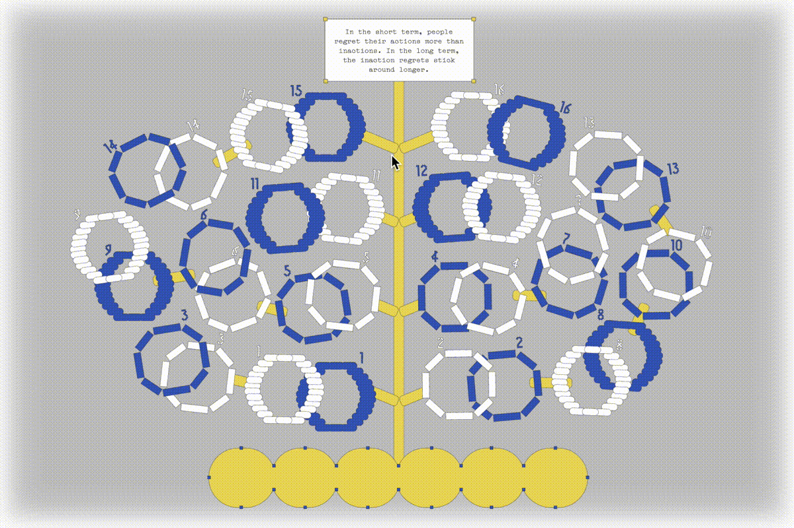
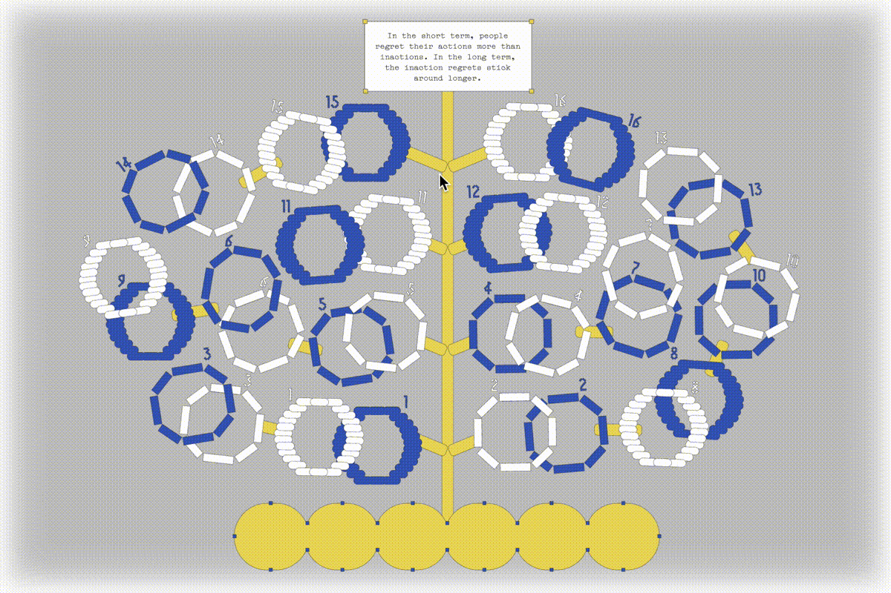

Khe Nguyen is a designer in Brooklyn/NY, focusing on brand identity and UX/UI.
She studied at Parsons The New School and is interested in
exploring multimedia design to communicate visual ideas.
When she is not designing, you can find Khe with her camera exploring
the cultures and landmarks that the city have to offer.


 


GOAL: Provide a visual solution to humanize the company, elevate the entertainment and lean into fun and content of it all.
PROBLEM: The current outdated look of the site doesn't reflect the company's position as the innovative leader in the evolution of the industry. There's a lack of brand voice, a coherent color system, and hierarchy in scale between modules. The grid and layout appear blocky, with little visual appeal.
SOLUTION: Featuring an editorial and tech-inspired design style, the new site offer a clean layout and cutting-edge elements bring a futuristic aesthetic with a touch of sophistication and organization to the web design. This creates a digital experience that mirrors the dynamic and ever-evolving world of technology.
DESIGN SYSTEM:


LANDING PAGE | CURRENT (LEFT) & REDESIGN SITE (RIGHT):


OUR COMPANY | DIVISION C&E | IMPACT:

PRESS ROOM | ARTICLE:

INFOGRAPHIC EXPLORATION:


My Role: UI and Branding Design | Formed and designed a fresh look and feel UI kits and developed the flow for the gamify app.
Credit / Developer: Ricky Blake and Jin Yoon / Code & Theory / Client: Comcast

PROBLEM STATEMENT: The current navigation falls short in representing the page's information architecture, result in the misinterpretation of the complexity between regional and global product-based business lines, and concealing secondary (pages within a section) and tertiary navigation schemes.
SOLUTION: A nav bar organized by what a user,s looking for, not the lines of business.
PROJECT GOAL: Gamification - Use the interest in one product category to drive interest in related product categories across the site. Initial screens for “Smart nav” that serves as a companion to guide a user on their journey with recommendations and a reflection of the journey they,re on.
Navigation Bar Current vs Proposal:


DEMO NAV FLOW:

CBOE BRAND SYSTEM


LANDING PAGE | CURRENT (LEFT) & REDESIGN SITE (RIGHT):


My Role: UXUI | Supported the restructuring the nav bar and translated desktop to mobile design.
Credit / Design Director: Isabel Sousa / Code & Theory / Client: CBOE

INFORMATION DESIGN:
Redesign and simplify the external tool into the internal table system for entity diagram.


Stage 2: Add feature for grouping event nodes, the risk elevating events will be called out with a badge on side panel.
Stage 3: Testing versions for both event node panel and diagram nodes expansion.
Stage 4: Apply UI Kits Design.
Redesign and simplify the external tool into the internal table system for entity diagram.


My Role: Prototype & UI Kits | Translated wireframe into high-fidelity prototype and developed components library.
Credit / Lead Designer: Sanchi Oberoi / Code & Theory / Client: Comcast
<<< Click here to explore Favicam>>>
¯\_(⊙_ʖ⊙)_/¯*¯\_(⊙_ʖ⊙)_/¯*¯\_(⊙_ʖ⊙)_/¯
My Role: Design and Developing
Credit: / Superviser: Eric Li / Project: CD Studio: JavaScript


My Role: Branding & Ideate | Visualized brand vision, restructured brand name and designed interactive branding system
Credit / Co-deisnger: Tuan Ha / Superviser: Tuan Le / Client: FPDB

<<< Click here to view full Thesis Presentation>>>
My Role: Research, Ideate, Design and Illustration
Credit / Superviser: Matt Barnes and Juliette Cezzar / BFA CD Thesis


My Role: Design and Illustration | Worked with production for material sourcing and post-production editing
Credit / Co-deisnger: Tran N Nguyen, Andree Nguyen / Superviser: Tuan Le / Client: Bakes Saigon


My Role: Design and Develop P5.js
Credit: / Superviser: John Provencher / Project: A-Generative-Web

PROBLEM:
Health literacy is a main issue when looking for dietary supplements. Customers, especially the older generations, often face challenges such as accessing technology, understanding medical information, determining the credibility of information, and having limited access to pharmacists or professional help.
SOLUTION:
Gamification - Turn the stress of making medical decision into a game through a self-scan kiosk that offer in-store supplements.
HOW:
Each decision touch-point is connected to a body part of the HelpScan mascot. The flow is designed to minimize stress and guide users through the scanning process. Once decisions are made, all parts will come together to create a personal mascot that fits user needs and supplements. The design of the mascot is inspired by pill shapes, medical supplies, and daily exercise to boost stamina.


Step 1: Welcome Page & Step 2: Scan Supplement

Step 3: Confirm Scan & Step 4: Alternative Supplement

Step 5: Finalize Choice & Step 6: Sent prescription via SMS/Email or to Counter
<<<Click here for high-fidelity prototype >>>
¯\_(⊙_ʖ⊙)_/¯*¯\_(⊙_ʖ⊙)_/¯*¯\_(⊙_ʖ⊙)_/¯
My Role: UI and Branding Design | Formed and designed a fresh look and feel UI kits and developed the flow for the gamify app.
Credit: / Superviser: Tuan Le / Co-Designer: Trang Dinh / Research and Database: McKinsey Berlin


<<<Click here for view Vol1, Vol2, Vol3 >>>


<<<Click here for full campaign summary >>>


My Role: Conceptualized idea, designed digital/print visuals and working with developer for campaign/exhibition website
Credit: / Superviser: Tuan Le / Co-Designer: Reo Le, Tran N Nguyen, Andree Nguyen